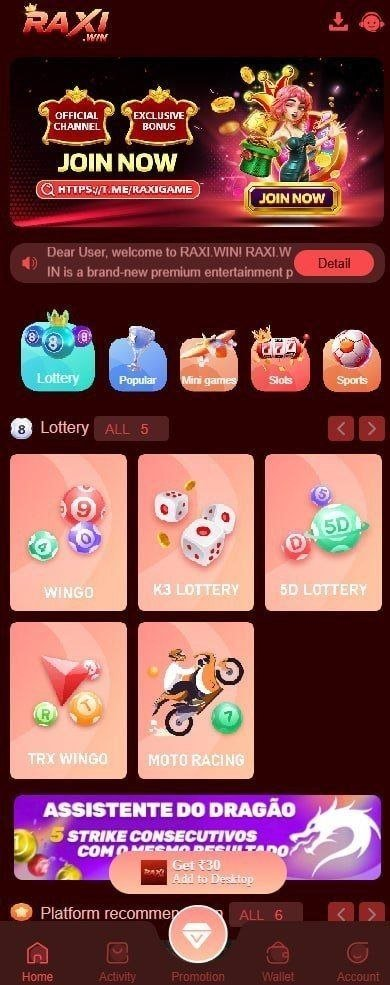
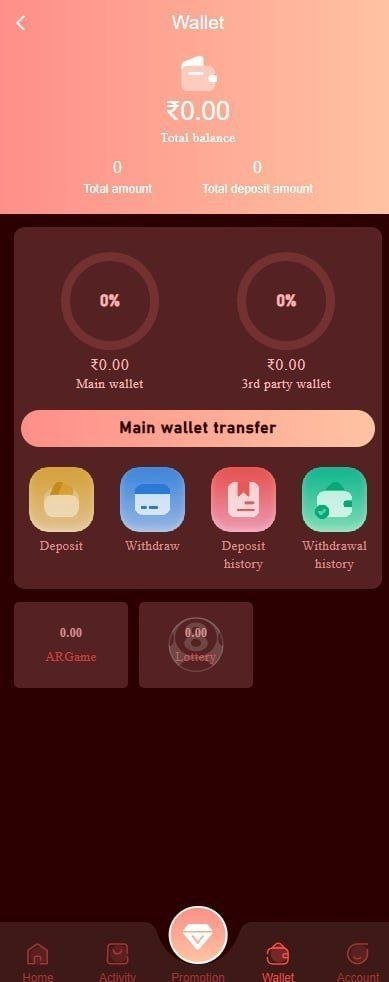

Fast Access
Direct account links and a lightweight interface help users reach key areas quickly.
Fast access. Simple experience.
Play Smart. Win More. Experience Premium Gaming.
Find Raxi Game login, Raxi registration, referral code guidance and mobile account access through a streamlined website designed for phones, tablets and desktop devices.
Get StartedAbout the platform
Raxi Games is an online gaming destination focused on straightforward account access and a comfortable user experience. The platform brings login, registration, navigation and account tools together so users can spend less time searching and more time understanding the available options.
The main benefits of Raxi Games include fast page access, an organized dashboard and a layout that works across common screen sizes. Clear labels and direct links help new users register efficiently, while returning users can reach their account without unnecessary steps.
Mobile accessibility is central to the experience. Raxi Games is designed to remain readable and easy to use on Android phones, iPhones and tablets, with large touch targets and concise navigation. Lightweight pages also support faster loading on mobile networks.
Platform essentials
Practical tools and a focused layout make every important action easier to find.
Direct account links and a lightweight interface help users reach key areas quickly.
A clear login route helps users access their account through the official platform entry point.
A prominent registration path keeps new account setup simple on both mobile and desktop.
Responsive layouts, readable text and large controls provide comfortable access on small screens.
Support information remains available around the clock for common account and access questions.
Important platform notices and access information can be reviewed from one organized location.
Account information and useful platform options are arranged for quick review after login.
Descriptive labels and direct internal links reduce the effort needed to move around the website.
Designed with purpose
A focused platform experience built around trust, speed and everyday usability.
Clear access routes and practical account guidance encourage safer sign-in habits.
A lightweight interface reduces unnecessary loading work and supports a quick first visit.
Consistent page structure helps users find the same essential actions on every device.
Flexible layouts adapt cleanly to Android, iPhone and tablet screen sizes.
Spacious sections, readable typography and simple labels keep the platform approachable.
Optimized local assets and framework-free pages support strong Core Web Vitals.
Mobile platform preview
Explore example Raxi Game screens for the game lobby, promotions and wallet. Interface content, available games and promotional terms may change in the live platform.

An example mobile lobby with Lottery, Popular, Mini Games, Slots and Sports categories, plus visible game tiles including Wingo, K3 Lottery and 5D Lottery.
A sample promotions page displaying mission bonuses, daily check-in rewards and lucky-spin offers. Reward amounts shown in the screenshot are examples and require verification in the live app.

An example wallet dashboard with balance information, Deposit, Withdraw, Deposit History, Withdrawal History and Main Wallet Transfer controls.
Screenshot notice: Images are provided as interface examples. Features, games, balances, promotions, payment options and reward values may differ in the current platform.
Platform information
Review current access information and practical reminders before using your account.
June 5, 2026
The Raxi Games information website now uses a faster static layout with prominent Login and Register buttons, clearer navigation and improved readability on smaller screens.
Account reminder
Protect account details by checking the destination before signing in. Never share passwords or one-time verification codes with another person.
Performance note
The public website is delivered without a JavaScript framework, animation library or remote font, helping useful content appear quickly on supported devices.
Helpful account guidance
Clear answers about Raxi Game login, account registration, game apps, wallet balance, deposit money, withdraw money, payment history, bonuses and safer account use.
Raxi Games is an independent information and access website covering account login, registration, mobile access, game categories, wallet features, updates and support guidance.
Select the Raxi Game Login button at the top of this page, then enter the registered mobile number and password requested by the linked platform. Check the destination before signing in and never share a password or one-time verification code.
Select Raxi Register, provide the requested mobile number and account details, create a strong password and complete verification. Review eligibility requirements and platform terms before opening an online game account.
Raxi app download availability and installation methods can change. Use only the source linked by the platform, verify the website address and avoid game APK files from unknown third-party websites.
A referral, invitation or gift code may connect a new registration to a promotional offer. The Raxi registration link on this website includes invitation code 458323890871. Confirm bonus availability, wagering rules and eligibility on the registration page.
Yes. The information website is responsive and designed for Android phones, iPhones, tablets, laptops and desktop screens.
Deposit money and withdraw money options are managed inside the linked game account. Payment methods, identity checks, minimum withdrawal amounts, fees and processing times can vary, so review the current wallet rules before making a transaction.
Verify login links, use a unique password, keep verification codes private and review privacy, payment and withdrawal terms. No online gaming or money transaction service is completely risk-free.
Clear navigation can help beginners find login, registration, game information and support. New users should understand the rules, payment terms and financial risk before depositing money or participating.
No. Game results, winnings, earnings, bonuses and money withdrawal approval are not guaranteed. Offers can change and may include eligibility, wagering, deposit or verification conditions.
The supplied app screenshot shows categories and titles such as Lottery, Popular, Mini Games, Slots, Sports, Wingo, K3 Lottery, 5D Lottery, TRX Wingo and Moto Racing. The live game list may change by account, device or region.
Wingo is shown as a lottery-style game category in the supplied app screenshot. Before participating, review the current round timer, available selections, result rules and any financial risk information displayed inside the live game.
K3 is commonly presented as a dice-based lottery game. Rules, selection types, round durations and result calculations can differ by platform, so use the instructions shown for the active K3 game rather than assuming every version works the same way.
A 5D lottery game generally uses multiple number positions or result categories. Check the live rules, valid entries, closing time and result table before placing any paid entry.
TRX Wingo appears as a separate game tile in the supplied mobile screenshot. Its name does not guarantee a particular technology, result method or earning outcome; verify the game description and rules shown inside the platform.
Review the stake amount, paytable, game rules, balance requirements and responsible-play controls. Slot results are chance-based, and previous results do not guarantee a future win.
A Sports category is visible in the supplied app screenshot, but available events and features may change. Check the live platform for current sports content, eligibility rules and settlement terms.
Moto Racing is displayed as a game tile in the example lobby. Open the current game instructions to understand its controls, entry options, result method and any wallet balance requirements.
Round-based games normally show a timer, entry period and result history inside the game screen. Wait for the official in-app result and check account history instead of relying on unofficial predictions or messages.
Start by reading the rules and observing how rounds and results are presented. Choose only a category you understand, set a strict spending limit and avoid using borrowed money or funds needed for essential expenses.
The wallet screenshot includes total balance, Deposit, Withdraw, Deposit History, Withdrawal History and Main Wallet Transfer controls. Confirm the wallet balance, payment account and transaction details before taking action.
Available deposit and money withdrawal methods are shown inside the live wallet and can vary. Review the payment provider, account details, fees, limits and processing time before confirming a transaction.
A pending withdrawal may require account verification, bank or payment review, turnover checks or additional processing time. Check Withdrawal History and current wallet rules, then contact account support if the money withdrawal status does not update.
Use the password recovery option on the official login screen and follow the mobile number or verification steps provided. Never give a password or one-time code to someone claiming they can recover the account for you.
Verification requirements can depend on account activity, deposit payments, money withdrawals and applicable rules. Submit information only through the account interface and review why each detail is requested.
The supplied promotions screenshot displays examples such as first-deposit offers, missions, check-in rewards and lucky-spin promotions. These images are illustrative; availability, reward values, eligibility and completion conditions can change.
Use the customer-service or support control inside the linked account platform for login, wallet or transaction issues. Provide only the information needed for the case and never send a password or one-time verification code.
This information website works on modern Android and iPhone browsers. App availability and installation steps can differ by device, so use the official platform instructions for the current supported version.
Set time and spending limits, understand each game before participating, avoid chasing losses and never use money required for essential expenses. Stop playing and seek appropriate support if gaming becomes difficult to control.
Contact Raxi Games
Send a message for general website, access or account guidance. Do not include passwords, payment credentials or one-time verification codes.
Official Telegram
Open the official Telegram channel for announcements and contact information. Never share passwords, payment credentials or one-time verification codes in a public chat.
Open TelegramImportant information
The information provided on this website is for informational and educational purposes only. We are not affiliated with, endorsed by, or responsible for any third-party gaming, betting, or promotional platforms mentioned on this site. Users are encouraged to independently verify all information, terms, conditions, and eligibility requirements before registering, participating, or making any financial transactions. We do not guarantee the accuracy, completeness, or reliability of any third-party content, offers, or services.